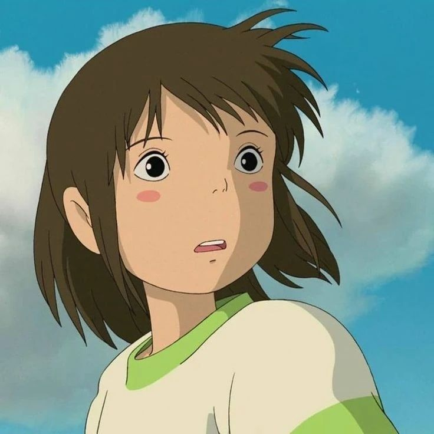
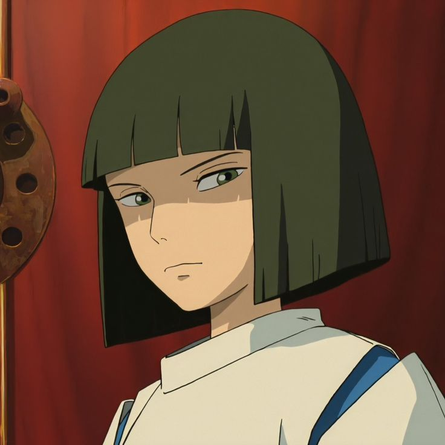
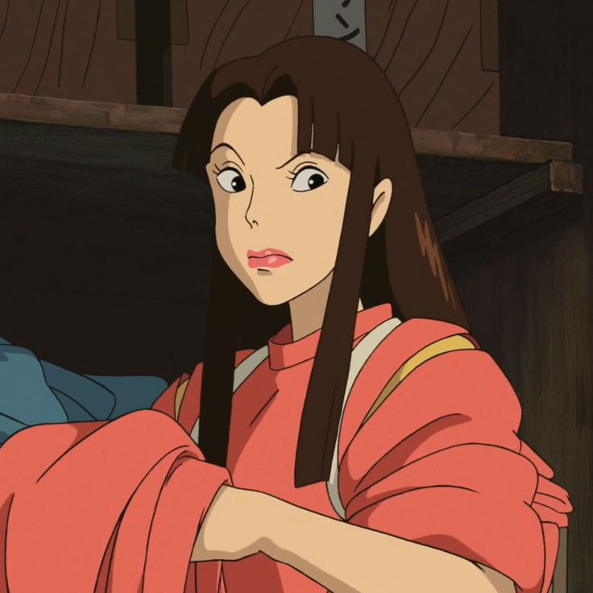

Chihiro:
Chihiro é uma garotinha mimada e covarde, mas quando vê que seus pais se
transformaram em porcos e acaba sendo feita de prisioneira por Yubaba, ela tem que aprender
a se virar e a ter muita coragem para ajudar seus pais.

Haku:
Haku é o primeiro personagem que Chihiro encontra e aparenta tentar ajudá-la no
início, avisando-a para não ficar na vila até a noite e dando um grão para que Chihiro não
sumisse, mas age de forma rude e indiferente quando está na frente de outras pessoas.

Lin:
Um dos diversos espíritos que vivem na casa de banhos e também está no controle
de Yubaba, mas apesar disso trata Chihiro bem, sempre a ajudando.
Tem uma personalidade forte.